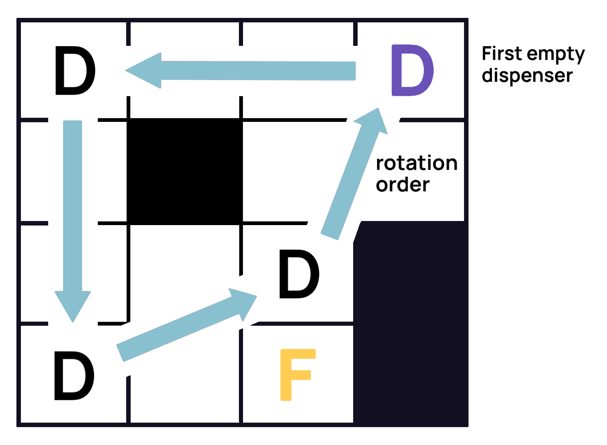

FalconHacks Computing Contest
Instructions
You may solve each of these problems in Python (2.7 and up), C++ (C++11 and up), or Java. Your submissions will not be evaluated on the speed at which they run (as long as they run in under 10 seconds), only on how many of our test cases they pass. Each problem is worth the same amount of points, but earlier submissions will gain bonus points. Therefore, the best way to maximize your score would be to start with the easiest questions and find solutions that work fast enough and are quicker to code. Good luck!
Problem 1: Marathon Registration+50% points!
Falco the falcon wants to register for the upcoming Foothill Falcon Marathon. After signing up on their website, he realizes that he forgot to write down his registration number! He has no way to go back and check what the number was, and he needs to know the number so he can compete in the marathon. But wait! Upon inspecting the website code, Falco sees that the registration numbers are generated using the Birdmann Zeta function, which takes two numbers $ N_1 $ and $ N_2 $ $ (1 \leq N_1 < N_2 \leq 100) $ and returns the average of the ($ N_1 + 167 $)th and ($ N_2 + 167 $)th prime numbers. Using his massive avian brain, Falco recalls that the last 3 digits of the registration number were a whole number $ P $ ($ 0 \leq P \leq 999 $). Given $ P $, find the smallest possible value of $ N_1 $ that could have generated Falco’s registration number.
INPUT
The first line contains $ P $.OUTPUT
Print the minimum possible value of $ N_1 $.EXAMPLE
Input:
54
Output:
5
Here, the output would be $ 5 $: when $ N_1 = 5 $ and $ N_2 = 14 $, the respective prime numbers are $ 1021 $ and $ 1087 $, which average to $ 1054 $.
Submit here!Problem 2: Buying Shoes+50% points!
Falco the falcon is preparing for the big marathon tomorrow. However, he doesn’t have any good running shoes. Falco wants to get three sets of running shoes of the highest quality possible while staying within his budget for each shoe. He wants to spend a maximum of $ M $ ($ 1 \leq M \leq 1000 $) dollars on each pair of shoes, and he doesn’t care about how much money he has left. Given $ N $ ($ 3 \leq N \leq 100000 $) pairs of shoes with their quality score and price, find the three pairs that he should buy and print their total cost.
INPUT
First line will have $ N $ and $ M $, the number of shoe options and the budget for each pair respectively. Following $ N $ lines will have integers $ Q $ and $ P $, the quality score and price of each pair of shoes.OUTPUT
Print the total cost of the shoes Falco should buy.EXAMPLE
Input:
5 10 10 5 4 7 7 10 9 13 3 5
Output:
22
Falco should buy the first, second, and third pairs that cost a total of $ (5 + 7 + 10) $ dollars. Note that we didn’t buy the fourth pair even though it had a higher quality score than the second and third because it was too expensive ($ 13 > 10 $).
Submit here!Problem 3: Fetching Shoes+50% points!
Immediately after buying his shoes, Falco tripped and dropped his shopping bag into a well. Unfortunately, he can’t just jump down and fly up as the well is too narrow; thus, he’s gathered his $ N $ ($ 1 \leq N \leq 1000 $) friends to help. Falco plans on creating a chain of falcons so that one stands on the surface while the rest drop down into the well; the last falcon in the chain would then grab the bag. Thus, each falcon would need to be strong enough to hold on to the rest of the chain. Each of Falco’s friends will have a value $ S $ ($ 1 \leq S \leq 10000 $), the number of falcons he can hold. Given all of their S values, determine if Falco’s friends can form the chain.
INPUT
First line will have $ N $, the number of Falco’s friends. Following $ N $ lines will have $ S $, the strength of each falcon.OUTPUT
Print “SUCCESS” if a chain can be formed, or print “FAILURE” otherwise.EXAMPLE
Input:
5 1 4 3 0 6
Output:
SUCCESS
Since Falco's friends will be able to successfully form a chain, the shoe rescue operation is success.
Submit here!Problem 4: Falcon Marathon+50% points!
Falco the falcon is running the marathon. The marathon has set up $ N $ ($ 1 \leq N \leq 1000$) checkpoint stations, so Falco has to run through each checkpoint in order for the marathon. However, Falco has a body double that can check off two checkpoints for him (except the start and end checkpoints). Thus, Falco can skip a checkpoint and run directly to the next one (or skip two in a row, if he so wishes). Given the coordinates of the $ N $ checkpoints, figure out which two checkpoints he should skip in order to minimize the distance he runs.
INPUT
First line will have $ N $, the total number of checkpoints. Following $ N $ lines will have integers $ X $ and $ Y $, the coordinates of each checkpoint.OUTPUT
Print the two checkpoints Falco should skip, in numerical order and one-indexed (i.e. the first checkpoint in the list is 1, the second is 2, etc.)EXAMPLE
Input:
5 1 1 2 2 3 1 4 4 5 1
Output:
2 4
Falco should skip the second and fourth checkpoints, allowing him to run in a horizontal line from $ (1, 1) $ to $ (5, 1) $.
Submit here!Problem 5: Falcon on the Run+50% points!
Unfortunately, the other $ N $ ($ 1 \leq N \leq 50 $) racers have caught onto Falco’s body double scandal, and now they want to expose Falco for the cheater he is. In order to escape, Falco needs to outrun the $ N $ racers ahead of him. Falco always flies forwards at a consistent pace of $ 1 $ meter per second, and there are $ 100 $ meters left in the race; all other birds are now waiting in place for their opportunity to catch Falco. If Falco gets within $ K $ meters of a bird, the bird will alert all birds within $ K $ ($ 2 \leq K \leq 5 $) meters of it, who will then alert all birds within $ K $ meters of it, and so on. These birds will then turn around and fly towards Falco at a speed of 1 meter per second. If Falco and any of these birds are at the same integer point at the same unit of time, Falco will be caught and prevented from finishing the race. However, if Falco and the bird cross paths at a non-integer point, Falco has escaped that bird. Given $ N $, $ K $, and the positions of the $ N $ birds on a number line from $ 0 $ to $ 100 $ meters (the remaining distance in the race), print whether Falco will finish the race and escape.
INPUT
First line contains $ N $ and $ K $. Next $ N $ lines each contain the position of each bird (in order) as an integer from $ 0 $ to $ 100 $.OUTPUT
“SUCCESS” if Falco will make it out of the race, and “FAILURE” if he will not.EXAMPLE
Input:
3 3 5 7 12
Output:
SUCCESS
Falco will successfully make it past both networks of birds, the ones at position $ 5 $ and $ 7 $ and the single bird at position $ 12 $.
Submit here!Problem 6: Tired Falcon Runner+50% points!
After the marathon, Falco the falcon needs to recharge. He does so, shockingly enough, like us: he stuffs his face with ice cream. He goes to his favorite restaurant, Sweet Pellets, which is conveniently arranged as an $ N x N $ grid ($ 4 \leq N \leq 50 $). In Sweet Pellets, there are $ M $ ($ 3 \leq M \leq N $) ice cream dispensers located at given points in the restaurant. The restaurant also has $ C $ ($ 0 \leq C \leq N * N - M - 1 $) counters at various locations that Falco cannot go through; thus, he needs to go around them to reach dispensers. However, he’s not alone at the restaurant: there are also $ M - 1 $ other marathon birds that came to stuff their faces with ice cream. When Falco enters the restaurant, to his dismay, the other, faster marathon birds have already flown over and assumed their positions in front of the ice cream dispensers. At any given point in time, there is an ice cream dispenser open for Falco to go to—however, since the other birds rotate ice cream dispensers, that open dispenser changes every $ 1 $ unit of time. Given the values above, Falco’s starting point, the coordinates of the ice cream dispensers in the order of rotation, and the coordinates of the tables, find the amount of time that passes until Falco can get his ice cream.
INPUT
First line will have $ N $, $ M $, and $ C $. Next line will have Falco’s starting point as an $ (x, y) $ pair with the origin as the bottom left square of the grid. The following $ M $ lines will contain the coordinates of the ice cream dispensers. The first $ M - 1 $ dispensers will initially have birds stationed at them, and birds will rotate by moving down the list (the bird at the last dispenser will move to the top). The following C lines will contain the coordinates of the tables.OUTPUT
The minimum time that passes before Falco can get his ice cream.EXAMPLE
Input:
4 4 3 2 0 0 3 0 0 2 1 3 3 1 2 3 1 3 0
Output:
2
See the diagram below. If Falco moves two units to the left, he will reach the dispenser at $ (0, 0) $ just as it becomes empty, and that would be the minimum time before he can get his ice cream.
 Submit here!